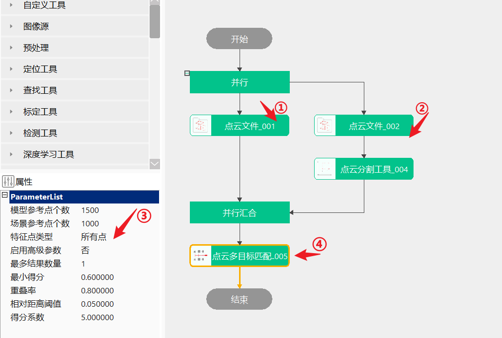

点云多目标匹配工具用于将模型点云和场景点云进行匹配，以得到场景点云中与模型点云相似度较高的点云。
主要用于在无序抓取或引导类项目中进行物料的匹配，以得到最合适的抓取或引导位置。
无
工具执行流程：加载模型点云→加载场景点云→设置匹配参数→执行匹配。

| 注意事项 |
|---|
| 1、匹配过程中，需要保证场景点云和目标点云的法向量一致，否则匹配为无效 |
| 参数名称 | 参数说明 |
|---|---|
| 输入模型点云 | 输入模型点云 |
| 输入场景点云 | 输入场景点云 |
| 参数名称 | 参数说明 |
|---|---|
| 模型参考点个数 | 取值范围[10, 2000]，默认为1000；该参数影响粗配准精度，建议参考点在1000个左右，若效果不理想可考虑增加 |
| 场景参考点个数 | 取值范围[10, 2000]，默认为1000；该参数影响粗配准精度，建议参考点在1000个左右，若效果不理想可考虑增加 |
| 特征点类型 | 分为所有点和边缘点 |
| KNN邻域搜索点数 | 取值范围[3,100]，默认为20 |
| 边缘阈值 | 取值范围[-10.0, 10.0]，默认为1 |
| 启用高级参数 | 是否开启高级参数设置 |
| 场景法向量取反 | 当场景法向量与模型不一致时需要取反 |
| 场景点采样步长 | 取值范围[-1,100]，默认为3 |
| 稠密匹配采样步长 | 取值范围[-1,100]，默认为3 |
| 稀疏匹配迭代次数 | 取值范围[1,200]，默认为50 |
| 粗匹配最小角度 | 取值范围[0,90]，默认为5 |
| 粗匹配姿态筛选优化 | 效率优化策略，开启后并调整策略相关参数，内部将对粗匹配的输出姿态进行优化 |
| 稀疏匹配使用最小迭代偏差结果 | 精度优化策略，开启后并调整策略相关参数，内部将对稀疏匹配的输出姿态进行优化 |
| 倾斜角度筛选 | 启用后可过滤倾斜角度较大的姿态 |
| 遮挡比例筛选 | 启用后可过滤姿态遮挡 |
| 最大倾角 | 取值范围[0,90]， 默认值为 45.0 |
| 最大遮挡比例 | 取值范围[0,1]， 默认值为 0.2 |
| 是否开启超时退出 | 是否开启超时退出 |
| 超时上限 | 取值范围[1, 3600.0]， 默认值为30.0 |
| 最大结果个数 | 取值范围[1,10000]，默认为1；输出匹配结果的个数 |
| 最小得分 | 取值范围[0,1]， 默认值为 0.4；大于该得分的结果才能输出 |
| 相似位姿重叠率 | 取值范围[0,1]，默认值为 0.8；匹配后，模型和场景的重叠程度，大于这个的默认为重叠姿态，只选其中一个输出 |
| 相似位姿过滤阈值 | 取值范围[0.0001, 1]，默认值为0.05；过滤相似姿态 |
| 得分系数 | 取值范围(0,50]， 默认值为 5.0 |
| 参数名称 | 参数说明 |
|---|---|
| 输出变换矩阵 | 匹配后的刚性变换矩阵 |
| 输出变换矩阵数组 | 匹配后的刚性变换矩阵数组 |
| 结果对应得分 | 匹配得分，取值范围[0,1] |
| 输出点云数据 | 模型变换后的点云数据 |
| 参数名称 | 参数说明 |
|---|---|
| 输出变换矩阵 | 匹配后的刚性变换矩阵 |
| 输出变换矩阵数组 | 匹配后的刚性变换矩阵数组 |
| 结果对应得分 | 匹配得分，取值范围[0,1] |
| 输出点云数据 | 模型变换后的点云数据 |
| 执行结果 | 工具执行结果 |
| 执行时间 | 工具执行时间 |
参见“\Samples\3D\点云\点云多目标匹配工具.gvp”。